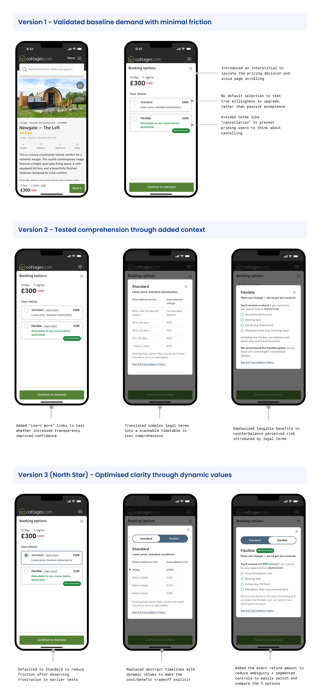
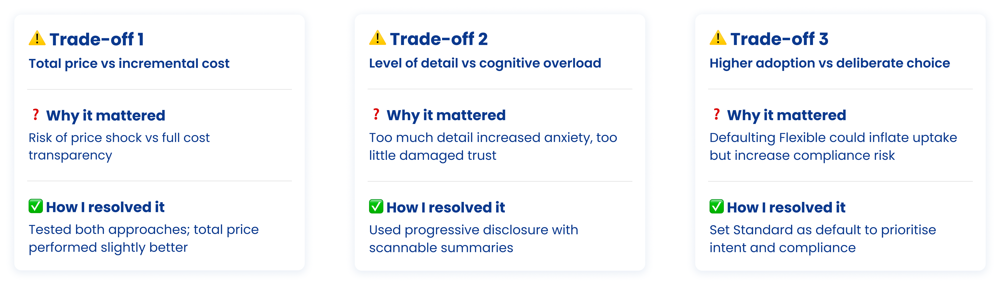

This case study is written as a behind the scenes story to give you a better idea of what it's like to work with me, with a focus on decision making, stakeholder alignment and trade-offs required to deliver the initiative.
💼 Cottages.com
🕰️ 2025 - 2026
🧑🏻🎨 Product Designer
🎯 Opportunity & business goal:
Increase booking confidence by offering a paid Flexible Cancellation option, while growing overall revenue per visitor without causing disproportionate conversion loss.
💡 My approach & role:
• I led the design direction and strategic framing for Flexible Cancellations, operating at product-area level and aligning with designers across the booking journey to ensure a consistent end-to-end experience.
• I defined the North Star, aligned Product, Engineering, Legal, Marketing and Commercial stakeholders, and guided decisions that balanced customer trust, commercial impact and experience risk.
📈 Success metrics:
• Estimated £4 million annual incremental revenue
• 23% attach rate (vs 15% target)
For big projects, rather than designing for isolated parts of the journey, it's my standard practice to run cross-squad workshops at a product level to identify the impacted areas of the journey.
This also helped aligning design, product and tech towards the same goal, across the whole experience.
At each stage, I addressed a specific risk and used research and behavioural insight to guide decisions.
 While overall conversion decreased slightly, this was an explicitly accepted trade-off,
The primary risk was introducing a price sensitive decision on the Property Description Page, historically the most fragile part of the funnel.
Despite this, I made the call to proceed with controlled experimentation rather than defaulting to safer but lower impact options.
3 big diverging opinions emerged around pricing, level of details and compliance:
 Each decision balanced user confidence and commercial impact resolved through experimentation